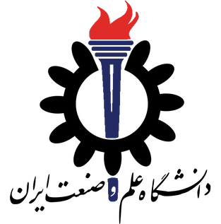
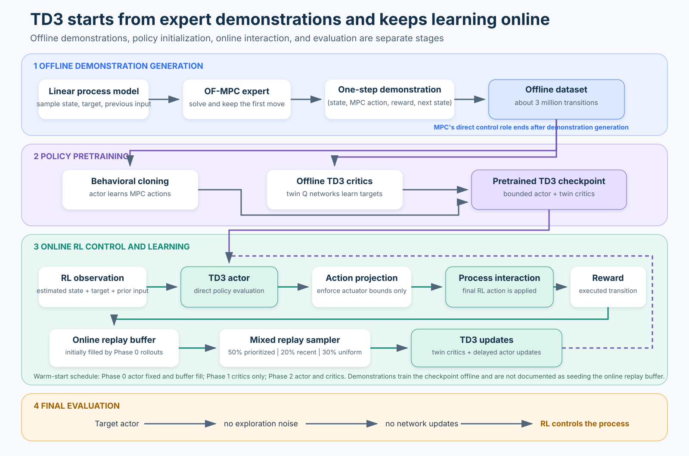
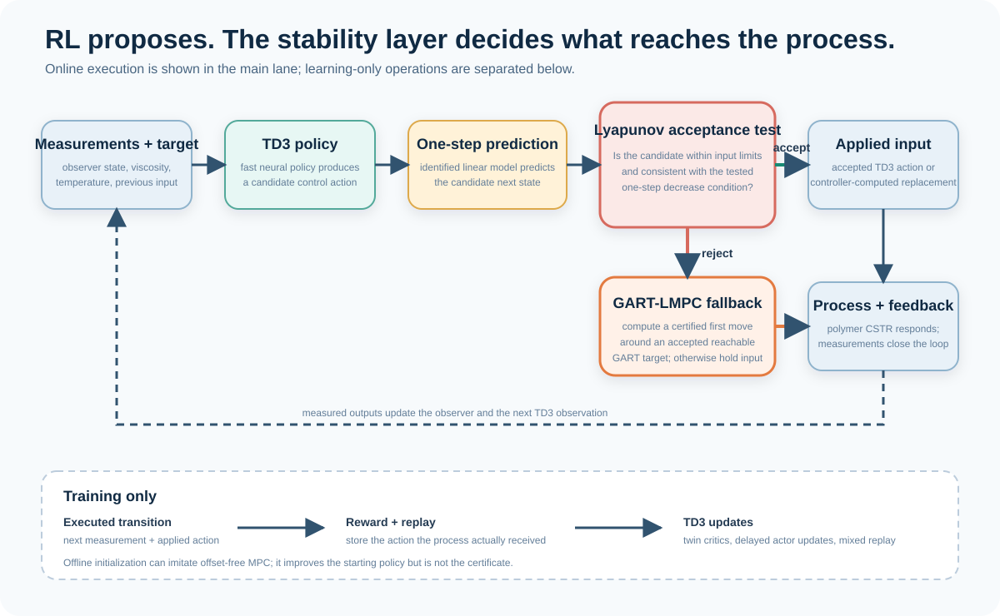
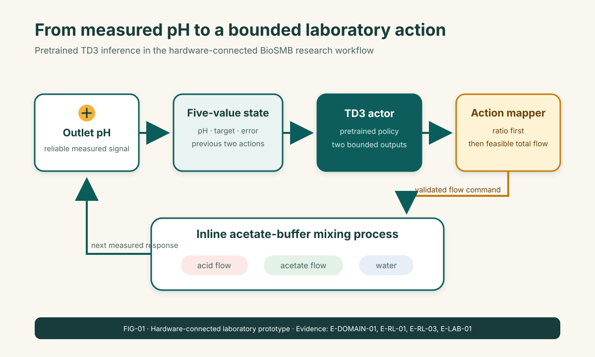
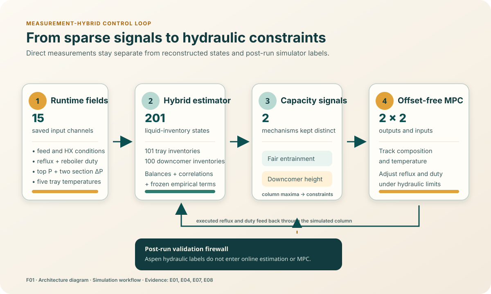
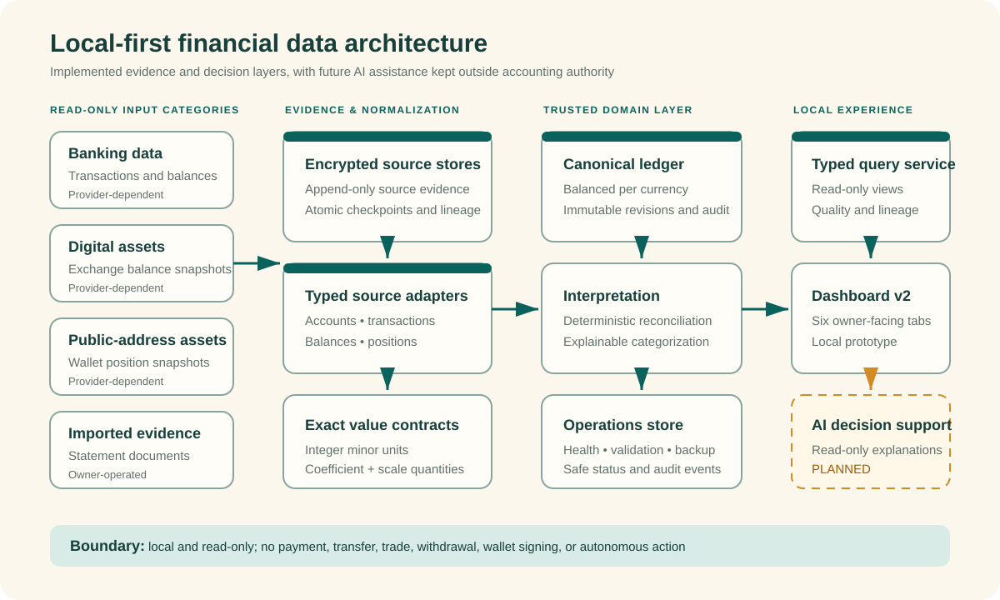

2022 - Expected Jan 2027
Amir Hamedi
Amir Hamedi · Ontario, Canada
Machine learning for complex process systems.
Machine Learning Engineer | Reinforcement Learning Researcher | Process Systems & Control Engineer
I am a machine-learning and process-systems engineer working across reinforcement learning, scientific machine learning, and control. I develop data-driven methods for complex process systems in simulation and laboratory settings.
Education
2018 - 2021
MSc Process Design Engineering
University of Tehran
2012 - 2017
BSc Chemical Engineering
Iran University of Science and Technology
Selected work
6 case studies spanning reinforcement learning, scientific machine learning, control, laboratory experimentation, and data engineering.
MPC-Pretrained Reinforcement Learning

Developed an RL-centered workflow that initializes Twin Delayed Deep Deterministic Policy Gradient (TD3) from model predictive control demonstrations, then gives the neural policy direct control and online adaptation across polymer-reactor and Aspen Dynamics C2-splitter simulations.
Multi-Channel RL-Assisted MPC

Designed a four-channel RL-assisted MPC architecture in which DQN and TD3 agents propose bounded controller adjustments and channel-specific critic gates decide whether to use each learned proposal or a conservative supervisor action.
Stability-Aware Reinforcement Learning

Developed an RL-first control architecture in which TD3 proposes continuous coolant and monomer flow commands and a Lyapunov-guided GART-LMPC layer evaluates each move before it is applied to a simulated polymerization reactor.
Reinforcement-Learning pH Control for BioSMB

A simulation-pretrained TD3 policy generated bounded acid/base flow decisions during a 4.55-hour BioSMB laboratory run across a changing pH sequence.
Distillation Flooding Detection and Control

A measurement-hybrid 201-state hydraulic estimator uses 15 runtime fields to supply interpretable Fair and downcomer coordinates to constrained model predictive control in an Aspen Dynamics simulation.
Finance Assistance

Finance Assistance is a local-first platform that converts heterogeneous financial records into traceable accounting and read-only analytics, with guarded machine-learning categorization and a planned path toward human-reviewed AI portfolio decision support.
Technical expertise
Reinforcement Learning
Value-based, actor-critic, and policy-optimization methods for discrete and continuous control, including DQN, TD3, TD7, and SAC; behavioral cloning, imitation learning, advanced experience replay, offline-to-online learning, and safe-RL action screening.
Machine Learning
Deep-learning architectures spanning convolutional, recurrent, attention-based, and sequence-modeling methods; time-series modeling, PINNs, generative models, PCA/PLS, autoencoders, clustering, classical machine learning, and LLM applications.
Control & Optimization
Linear and nonlinear control, model predictive control, linear and nonlinear optimization, and metaheuristic optimization for nonlinear process systems.
Software & Platforms
Python, PyTorch, MATLAB/Simulink, Aspen Plus/Dynamics, Pyomo/IPOPT, SQL, Power BI, Tableau, Minitab, Git, and LaTeX; laboratory automation and hardware integration.
Current trajectory
Graduate Researcher and PhD Candidate
2022 - PresentMcMaster University
Research in deep reinforcement learning, safe reinforcement learning, scientific machine learning, and control for nonlinear process systems across simulation, Aspen Dynamics, and laboratory experimentation.
Teaching Assistant
2023 - 2026McMaster University
Supported Process Control, Transport Phenomena, and Reactor Design through tutorials, grading, student consultation, and examination support.
Selected publications
2026
A Practical MPC-Pretrained Reinforcement Learning Framework for Complex Process Systems
Amir Hossein Hamedi, Hesam Hassanpour, Ankur Kumar, Atharva Vijay Suryavanshi, Prashant Mhaskar
Industrial & Engineering Chemistry Research
2026
Critic-Based Supervisory Gating for Multi-Channel Reinforcement Learning-Assisted Model Predictive Control
Amir Hossein Hamedi, Hesam Hassanpour, Ankur Kumar, Atharva Vijay Suryavanshi, Prashant Mhaskar
Computers & Chemical Engineering
2026
Practical Stability Net Based Reinforcement Learning Control from Step-Test Data
Amir Hossein Hamedi, Ankur Kumar, Atharva Vijay Suryavanshi, Prashant Mhaskar
Optimal Control Applications and Methods
Let’s connect
I welcome conversations about intelligent process systems, control, machine learning, reinforcement learning, and applied research collaborations.